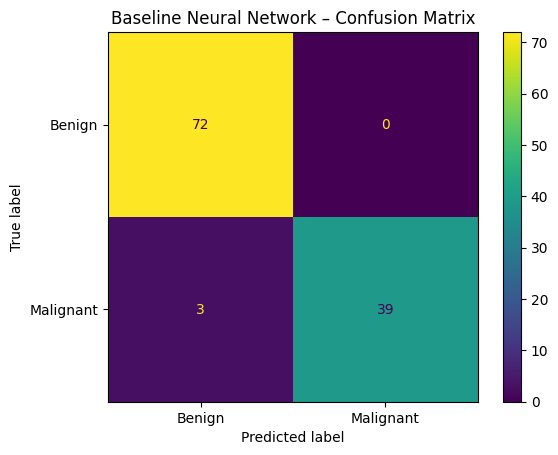
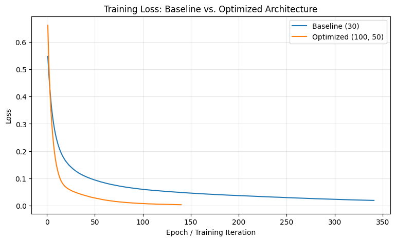

PROJECT 02
Breast Cancer Neural Network Classification
A neural network classification project focused on predicting whether breast tumors are malignant or benign using diagnostic measurements.
OVERVIEW
Project Overview
The objective of this project was to develop and optimize a Multilayer Perceptron neural network for binary breast cancer classification.
The project explored data preprocessing, feature scaling, neural network architecture, model evaluation, training loss, and architecture optimization.
DATA
Dataset
The dataset contains diagnostic measurements describing characteristics of cell nuclei extracted from breast mass images.
Observations
569
SamplesInput Variables
30
FeaturesBenign
357
CasesMalignant
212
CasesMETHODOLOGY
Approach
The data was prepared before neural network training by removing the identifier column, encoding the target variable, splitting the data into training and testing sets, and standardizing the numerical features.
MODEL
Neural Network Architecture
The baseline model used a Multilayer Perceptron with one hidden layer containing 30 neurons.
Additional architectures were then evaluated using cross-validation to determine whether increasing network complexity improved classification performance.
RESULTS
Model Performance
Optimizing the neural network architecture improved classification performance on the held-out test set.
Baseline Neural Network
97.37%
Test AccuracyOptimized Neural Network
98.25%
Test AccuracyBest Cross-Validation
97.80%
Mean CV AccuracyOPTIMIZATION
Architecture Optimization
The initial neural network used one hidden layer containing 30 neurons and achieved 97.37% test accuracy.
The selected architecture contained two hidden layers with 100 and 50 neurons and achieved 98.25% accuracy.
The baseline model classified 3 malignant cases as benign. The optimized architecture reduced this number to 2.
VISUALIZATIONS
Model Analysis

Baseline Confusion Matrix
The baseline network correctly classified all 72 benign observations and 39 of the 42 malignant observations in the test set.
Optimized Confusion Matrix
After architecture optimization, the neural network correctly identified 40 of the 42 malignant cases.

Training Loss Comparison
The loss curves illustrate how both neural network architectures reduced prediction error during training.
TOOLS
Technologies Used
KEY TAKEAWAYS
What I Learned
Neural networks perform more effectively when numerical features with different ranges are standardized before training.
Increasing network complexity improved classification accuracy in this experiment.
Confusion matrices were particularly useful for understanding which malignant and benign cases were incorrectly classified.
PROJECT RESOURCES
Explore the Full Project
Review the complete notebook for the Python implementation, preprocessing, model architecture, optimization, and evaluation.